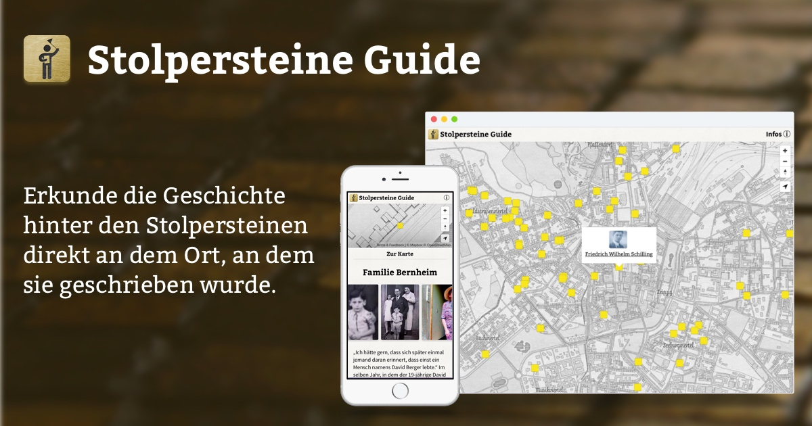

<div class="row">
	<div class="col-md-12">

		<a href="https://stolpersteine-guide.de/">
		
		</a>

		<br>
		<p class="text-center"> Erkunde die Geschichte hinter den Stolpersteinen direkt an dem Ort, an dem sie geschrieben wurde.<br>
			Als App mit Führungen und erweitertem Lexikon für iOS und Android.
		</p>
		<br>
	</div>
</div>